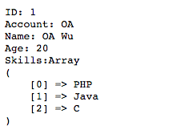
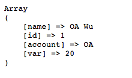

讀取 Read
格式：Class::find($unit, $conditions);。
- $unit - 字串，爲回傳格式，有 one、all 兩種，one 回傳單筆物件，all 則是物件陣列。
- $conditions - 陣列，查詢條件，分別有 must、limit、range、offset、select、should、must_not、script_fields 條件設定，細節如下：
- must - 必須符合條件
- limit - 回傳長度
- range - 範圍條件
- offset - 起始位移點
- select - 回傳 fields
- should - 模糊條件
- must_not - 完全未符合
- script_fields - script
單筆查詢
格式：Class::find('one', $conditions);，查詢方式使用 find，第一參數為 one，即回傳條件之下的第一筆物件，若無查詢結果則回傳 null，若查詢條件結果會是多筆的狀況，則會回傳第一筆。
PHP
結果
// 藉由 id 等於 1
$user = User::find('one', array(
'must' => array('id' => 1)
));
// 印出其詳細資料
echo 'ID: ' . $user->id . '<br/>';
echo 'Account: ' . $user->account . '<br/>';
echo 'Name: ' . $user->name . '<br/>';
echo 'Age: ' . $user->age . '<br/>';
echo "Skills:";
print_r($user->skills);

多筆查詢
格式：Class::find('all', $conditions);，查詢方式使用 find，第一參數為 all，即回傳條件之下的物件陣列，若無查詢結果則回傳空陣列。
PHP
結果
// 藉由 name 相似於字串 Wu
$users = User::find('all', array(
'should' => array('name' => 'Wu')
));
echo '<meta http-equiv="Content-type" content="text/html; charset=utf-8" /><pre>';
// 印出總數
echo 'Count: ' . count($users) . '<hr/>';
// 使用迴圈將其陣列物件內容印出
foreach ($users as $user) {
echo 'ID: ' . $user->id . '<br/>';
echo 'Account: ' . $user->account . '<br/>';
echo 'Name: ' . $user->name . '<br/>';
echo 'Age: ' . $user->age . '<br/>';
echo "Skills:";
print_r($user->skills);
echo "<br/>";
}

多項條件查詢
PHP
結果
// 依照不同條件綜合查詢
$user = User::find('all', array(
'must' => array('id' => 1), // id 一定要為 1
'limit' => 10, // 取前 10 筆
'range' => array('age' => array('from' => 0, 'to' => 100)), // 設定 age 範圍 0~100
'offset' => 0, // 起始位移值 0
'select' => array('id', 'account', 'name'), // 取出 id、account、name
'should' => array('name' => 'Wu'), // 如果有 Wu
'must_not' => array('name' => 'A'), // 不能有 A
'script_fields' => array('var' => array( // 新增一個變數，並且使用 script 處理
'script' => "doc['age'].value / 2 + constantVal",
'params' => array(
'constantVal' => 10
)
))
));
// 印出第一筆所有欄位資料
print_r($user[0]->fields);
